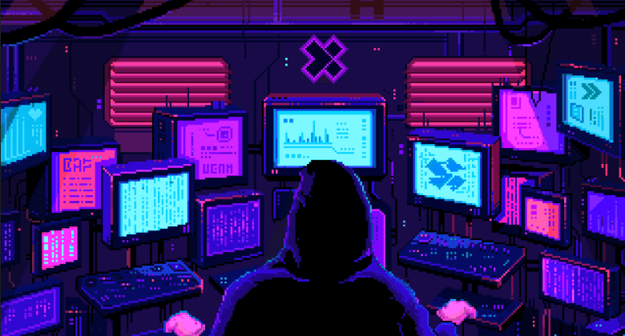

Offensive Security Journey

Kali on Proxmox
Initial vm setup: BIOS: OVMF (UEFI) if possible — it boots faster and plays better with modern display drivers (unless you have specific SeaBIOS needs). Machine type: q35 for newer hardware emulation. CPU type: host (so the VM gets all CPU features). Cores: 4–8 (Kali benefits from multiple threads when running security tools). Memory: 4–8GB for general use, more if using heavy tools. Display: Use Default (std) — avoid virtio-gpu since you have no GPU passthrough, but you can install virtio drivers inside Kali for better responsiveness.
DISABLE SECURE BOOT IF USING UEFI
sudo apt update && sudo apt full-upgrade -y sudo apt install -y curl wget unzip net-tools htop fail2ban
XFCE: sudo apt install -y kali-desktop-xfce sudo update-alternatives --config x-session-manager
Install Nomachine: wget https://www.nomachine.com/free/linux/64/deb -O nomachine.deb sudo dpkg -i nomachine.deb sudo systemctl enable nxserver.service
allow networks to nomachine: sudo ufw default deny incoming sudo ufw default allow outgoing sudo ufw allow from 192.168.1.0/24 to any port 4000 proto tcp sudo ufw enable
- Improve NoMachine performance (CPU-only)
Inside your Kali session:
In NoMachine player settings (client side):
Set Display quality → "Balanced" or "Speed".
Enable H.264 if supported.
Server side: sudo /usr/NX/bin/nxserver --configure --enable-service